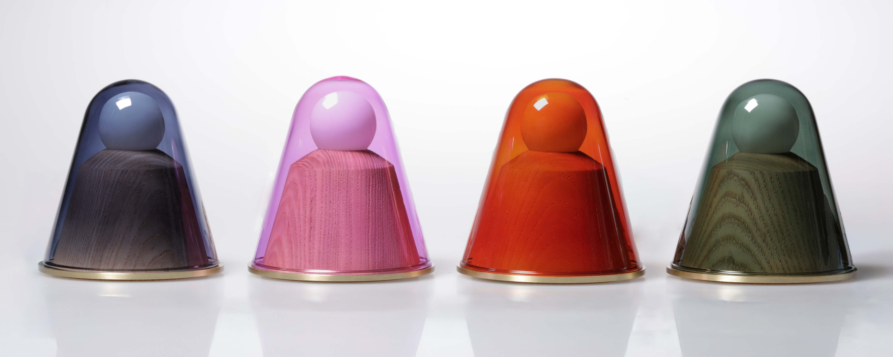

Elliott Rosenberg is a designer
based in Brooklyn, NY.
Trained in furniture design at RISD and computer science at Brown, working across physical product, editorial, and digital software. Currently co-founding Waiting Magazine and running Perennial Design Studio. Previously Partnership and Innovation Lead at Siegel, where I built the systems and teams behind a significant period of growth.
My practice sits at the intersection of making and thinking — interested in objects that carry their process visibly, publications built around a distinct point of view, and software that doesn't announce itself. I tend to work best at the early stage, when the problem is still being defined.
Outside of client work I teach occasionally, write sporadically, and collect things that have aged into usefulness. Based in Brooklyn with an ongoing interest in how things get built, distributed, and kept.
